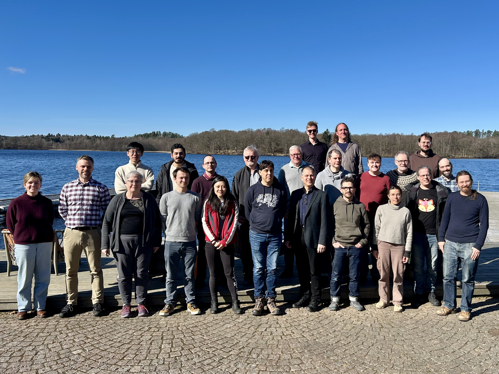

Home
Welcome to the Functional Programming group!
Research
We develop programming languages, methods and tools that make software more reliable, secure and usable. Members of the group have contributed to the design of Haskell, created property-based testing with QuickCheck, and built domain-specific languages for hardware design (Lava) and digital signal processing (Feldspar). Current work covers functional programming languages and their implementation, type systems, testing, hardware design and verification, and automated reasoning.
We also apply functional programming beyond software: multilingual language technology with Grammatical Framework, dependently typed models for mathematics and climate impact research (see DSLsofMath), reliable and efficient scientific computing, and usable artificial intelligence.
FP talks
We hold a weekly FP talk; talks are announced on the FP mailing list.
Members
- Aarne Ranta, Professor
- Abhiroop Sarkar, Former PhD Student
- Alejandro Russo, Professor
- Alex Gerdes, Senior Lecturer
- Ana Bove, Associate Professor
- Andreas Abel, Associate Professor
- Carl-Johan (Carl) Seger, Professor Emeritus
- Henrik Jansson Valter, PhD Student
- Inari Listenmaa, Lecturer
- Jean-Philippe Bernardy, Associate Professor
- John Hughes, Professor Emeritus
- John J. Camilleri, Teaching Fellow
- Jonas Almström Duregård, Senior Lecturer
- Koen Claessen, Professor
- Krasimir Angelov, Associate Professor
- Mary Sheeran, Professor Emerita
- Nick Smallbone, Researcher
- Nicola Botta, Adjunct Associate Professor
- Patrik Jansson, Professor
- Peter Ljunglöf, Associate Professor
- Robert Krook, PhD Student
- Yinan Yu, Assistant Professor

Earlier seminar series
During 2020 we organized The Chalmers Online Functional Programming Seminar Series which, for historic reasons, has its own page.Posts
- 2023-11-01-seeking-MSc-PhD-position - 2023-11-01
- 2023-10-14-Chalmers FP homepage step 2 - 2023-10-14
- 2023-09-19-new-FP-group-page - 2023-09-19